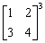
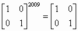

二階矩陣正整數冪(II)
程式是由網友SuperMANganese提供，程式可以計算一個2×2矩陣的正整數冪。 這個程式的速度比第(I)版快，特別是計算較大正整數冪時，很明顯比第(I)版快很多。
網更新日期: 2011年12月30日
程式需要在 REG Lin 模式下執行，因此在選擇新程式位置後，按 5 1 選用REG Lin模式。
注意: 藍色的英文字為統計模式中的變數(Σx 按 Shift 1 2，Σy 按 Shift 1 → 2，n 按 Shift 1 3)，要特別留意Σx2 是先按出統計變數Σx，然後再按平方鍵 x2，而不是直接按出統計變數Σx2。
程式 (202 bytes)
FreqOn: ?→A: ?→X: ?→Y: ?→D: ?→M:
Y→B: D→C: A÷M , X÷M ; M DT: 1→A:
Rec( 0 , 0: 1→D: Fix 0: While 1:
If .5n-Rnd(.5n: Then BA+CY→M: ΣxA+ΣyY→A:
M→Y: ΣxX+ΣyD→M: BX+CD→D: M→X:
n≦1 => Break: IfEnd: BΣx+CB→M: Rnd(- .5n:
Ans-1(Σx2 + BΣy - Σx , Ans-1(ΣxΣy + ΣyC- Σy ; Ans DT:
If B: Then Σx + B2 -1(2MBC - M2→C: Else C2→C: IfEnd:
M→B: WhileEnd: Norm 1: A◢ X◢ Y◢ D
註1: 冪數越大時，計算時間會較長。
註2: 程式限制為冪數小226，若果希望同時計算逆矩陣(負整數冪數)，可在程式尾加入程式碼 ◢ 1┘(AD - XY→B:
DB◢ -XB◢ -YB◢ AB，程式長度則變為 230 bytes。
註3: 程式原理 --- 此程式使用對冪數m分解為由2的冪數組成，
即m=a0 20+ a1 21 + a2 22 + ...+ ak 2k ，其中a0 , a1 , ... , ak = 0 或 1 及 ak ≦m。
例如: 100=22 + 25 +26 ，
而矩陣P的正整數冪 Pm = (P^( a0 20 ))(P^( a1 21 ))(P^( a2
22 ))...(P^( ak 2k ))
例如: P100 =(P4)(P32 )(P64) ，
此程式利用此方法計算Pm，
對任何正整數ｍ，此程式進行矩陣乘法運算的次數≦ 1+2(lnx)/(ln2)，
對一些較大的正整數m會運算會明顯比第(I)版快。
例題1: 計算

按 Prog 1 再按 1 EXE 2 EXE 3 EXE 4 EXE 3 EXE (顯示37)
EXE (顯示54) EXE (顯示81) EXE (顯示118)
所以

例題2: 計算

按 Prog 1 再按 1 EXE 0 EXE 0 EXE 1EXE 2009 EXE (顯示1)
EXE (顯示0) EXE (顯示0) EXE (顯示1)
所以

註4: 計算例題2，本程式計算時間大約為17秒，若果改用第(I)版(舊版本)，計算時間則大約為810秒。
返回 CASIO fx-50FH、fx-3650P II、fx-50FH II及fx-50F PLUS 程式集